Study 37 · 13 October 2026
The silhouette keeps
The two fallen stones now come from inside the outline, for every font: the front-most of the inside stones, then the two smallest. Sansita keeps its tail; every letter keeps its edge.
Open the page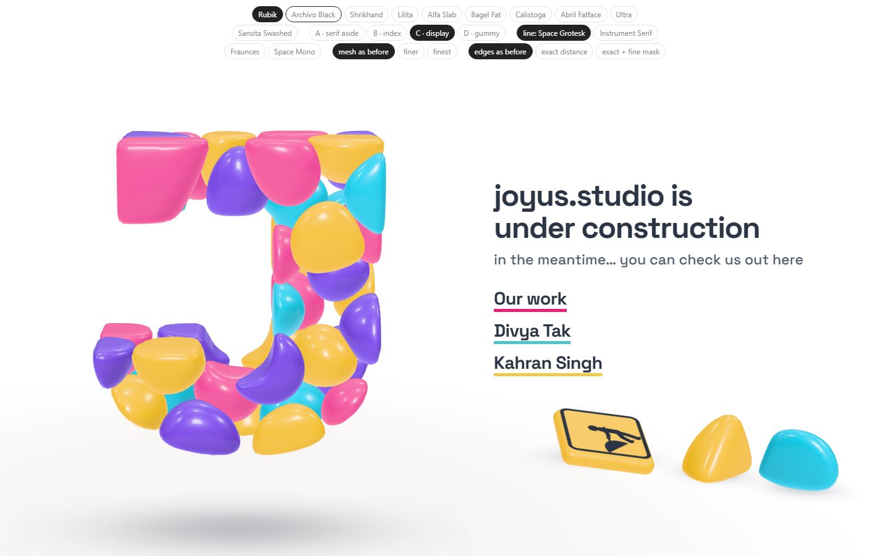
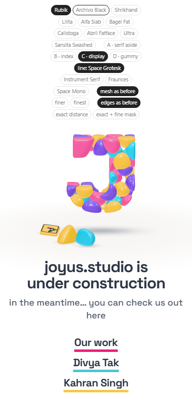
Sansita, three builds
The ten
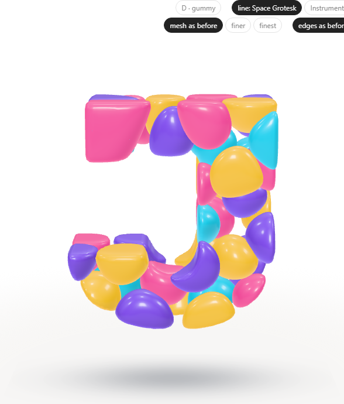
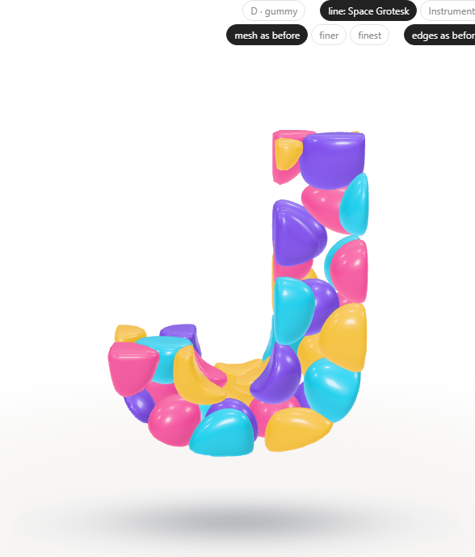
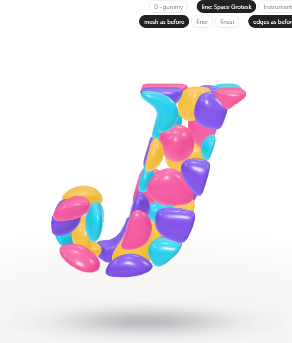
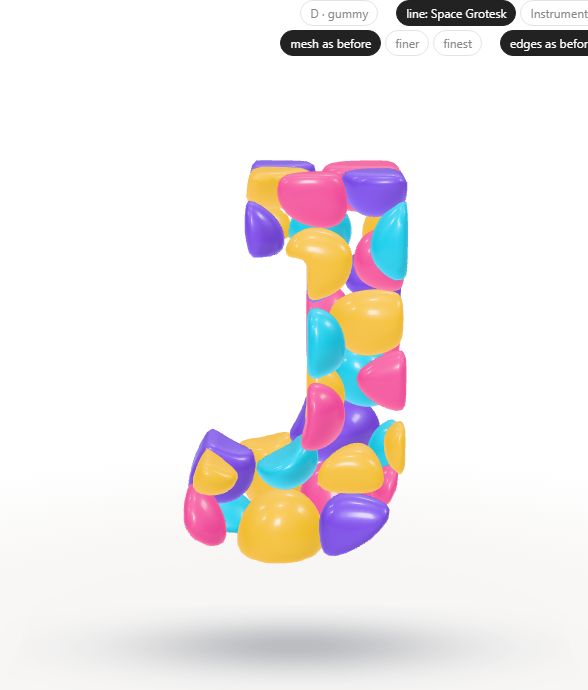
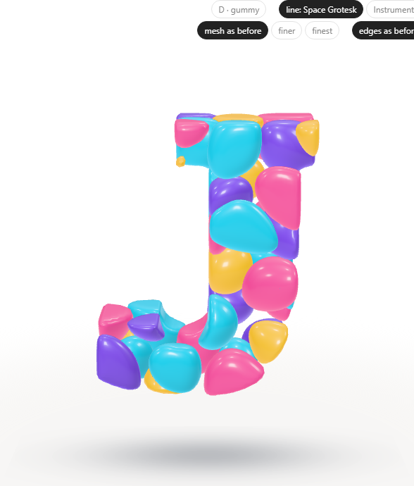
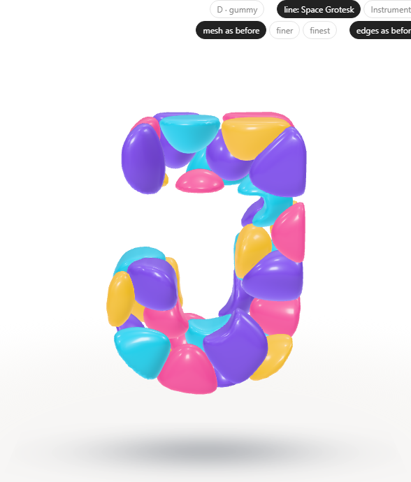
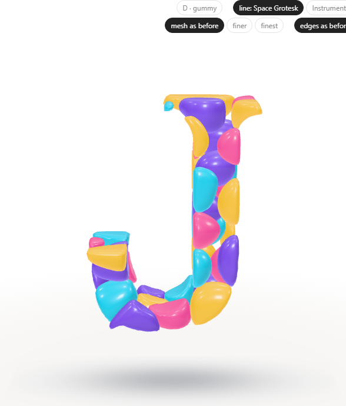
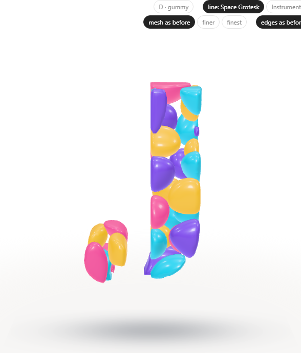
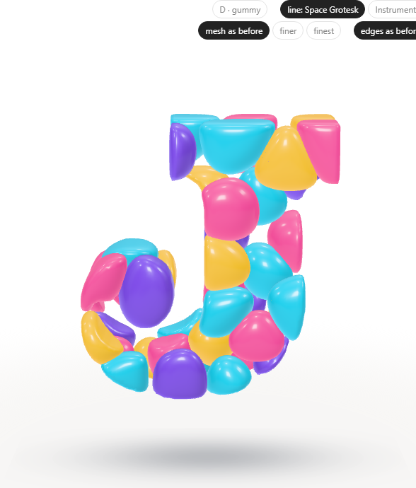
Open
- The pockets: visible enough, or should the fallen stones be the biggest inside ones?
Test: page-test.mjs, 55 checks in a browser; read by check.cjs.